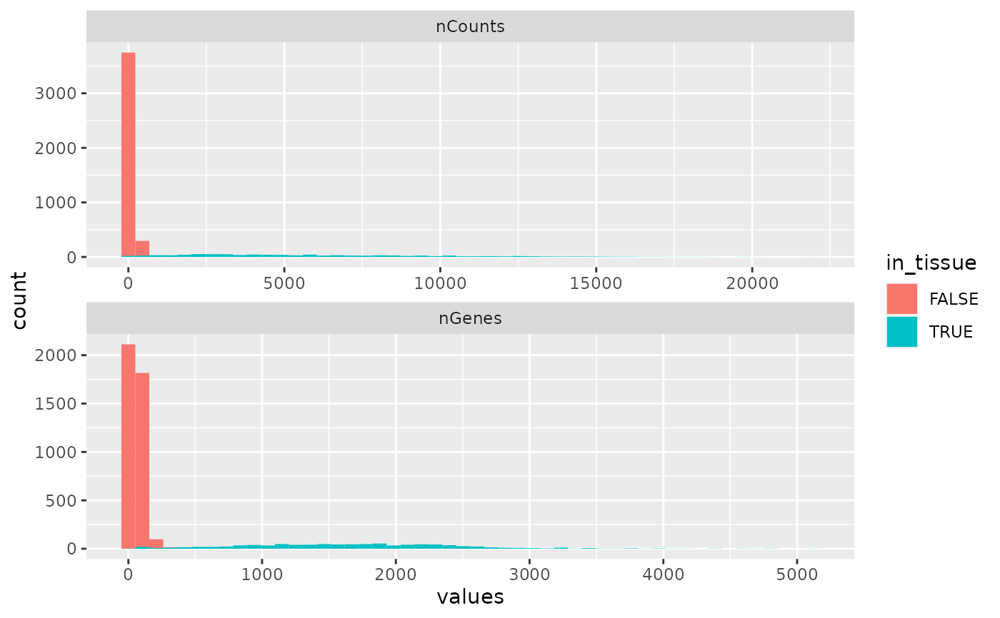
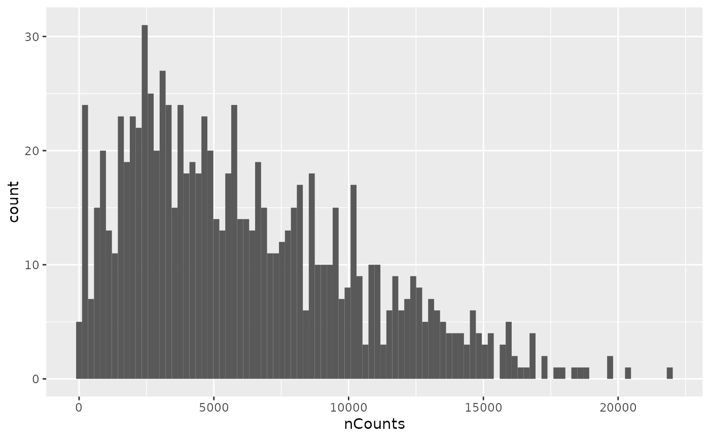
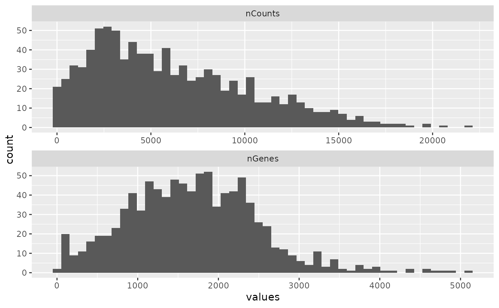

Plot histograms for colData and rowData columns
Source:R/plot-non-spatial.R
plotColDataHistogram.RdPlot histograms for colData and rowData columns
Usage
plotColDataHistogram(
sce,
feature,
fill_by = NULL,
facet_by = NULL,
subset = NULL,
bins = 100,
binwidth = NULL,
scales = "free",
ncol = 1,
position = "stack",
...
)
plotRowDataHistogram(
sce,
feature,
fill_by = NULL,
facet_by = NULL,
subset = NULL,
bins = 100,
binwidth = NULL,
scales = "free",
ncol = 1,
position = "stack",
...
)Arguments
- sce
A
SingleCellExperimentobject.- feature
Names of columns in
colDataorrowDatato plot. When multiple features are specified, they will be plotted in separate facets.- fill_by
Name of a categorical column in
colDataorrowDatato fill the histogram.- facet_by
Column in
colDataorrowDatato facet with. When multiple features are plotted, the features will be in different facets. In this case, settingfacet_bywill callfacet_gridso the features are in rows and categories infacet_bywill be in columns.- subset
Name of a logical column to only plot a subset of the data.
- bins
Numeric vector giving number of bins in both vertical and horizontal directions. Set to 100 by default.
- binwidth
The width of the bins. Can be specified as a numeric value or as a function that calculates width from unscaled x. Here, "unscaled x" refers to the original x values in the data, before application of any scale transformation. When specifying a function along with a grouping structure, the function will be called once per group. The default is to use the number of bins in
bins, covering the range of the data. You should always override this value, exploring multiple widths to find the best to illustrate the stories in your data.The bin width of a date variable is the number of days in each time; the bin width of a time variable is the number of seconds.
- scales
Should scales be fixed (
"fixed", the default), free ("free"), or free in one dimension ("free_x","free_y")?- ncol
Number of columns in the facetting.
- position
A position adjustment to use on the data for this layer. This can be used in various ways, including to prevent overplotting and improving the display. The
positionargument accepts the following:The result of calling a position function, such as
position_jitter(). This method allows for passing extra arguments to the position.A string naming the position adjustment. To give the position as a string, strip the function name of the
position_prefix. For example, to useposition_jitter(), give the position as"jitter".For more information and other ways to specify the position, see the layer position documentation.
- ...
Other arguments passed on to
layer()'sparamsargument. These arguments broadly fall into one of 4 categories below. Notably, further arguments to thepositionargument, or aesthetics that are required can not be passed through.... Unknown arguments that are not part of the 4 categories below are ignored.Static aesthetics that are not mapped to a scale, but are at a fixed value and apply to the layer as a whole. For example,
colour = "red"orlinewidth = 3. The geom's documentation has an Aesthetics section that lists the available options. The 'required' aesthetics cannot be passed on to theparams. Please note that while passing unmapped aesthetics as vectors is technically possible, the order and required length is not guaranteed to be parallel to the input data.When constructing a layer using a
stat_*()function, the...argument can be used to pass on parameters to thegeompart of the layer. An example of this isstat_density(geom = "area", outline.type = "both"). The geom's documentation lists which parameters it can accept.Inversely, when constructing a layer using a
geom_*()function, the...argument can be used to pass on parameters to thestatpart of the layer. An example of this isgeom_area(stat = "density", adjust = 0.5). The stat's documentation lists which parameters it can accept.The
key_glyphargument oflayer()may also be passed on through.... This can be one of the functions described as key glyphs, to change the display of the layer in the legend.
Examples
library(SFEData)
sfe <- McKellarMuscleData()
#> see ?SFEData and browseVignettes('SFEData') for documentation
#> loading from cache
plotColDataHistogram(sfe, c("nCounts", "nGenes"), fill_by = "in_tissue",
bins = 50, position = "stack")

plotColDataHistogram(sfe, "nCounts", subset = "in_tissue")

sfe2 <- sfe[, sfe$in_tissue]
plotColDataHistogram(sfe2, c("nCounts", "nGenes"), bins = 50)
